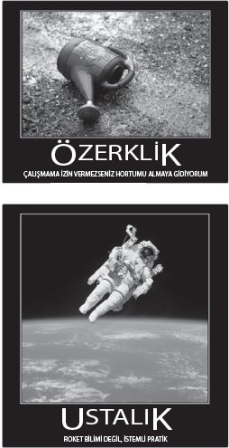

Tip I kişileri doğmaz, yapılır. Dünya harici motivasyon unsurlarıyla tıka basa dolu olsa da hayatımıza ve işimize daha fazla özerklik, ustalık ve amaç ekleme şansımız hâlâ çok fazla. Aşağıda sizi doğru rotaya sokacak dokuz egzersiz bulacaksınız.
KENDİNİZE "AKIŞ TESTİ" UYGULAYIN
Mihaliy Csikszentmihalyi, "akış" konseptini keşfetmekle kalmadı, bunu ölçmemizi sağlayacak zekice bir teknik de geliştirdi. Csikszentmihalyi ve Chicago Üniversitesi'ndeki ekibi, araştırmalarında kullandıkları deneklere elektronik çağrı cihazları verdi. Sonra bu insanları rastgele aralıklarla (günde yaklaşık sekiz kere) bir hafta boyunca arayarak o andaki ruh hallerini kendilerine anlatmalarını istediler. Önceki metotlarla kıyaslandığında bu gerçek zamanlı bilgiler, daha dürüst ve ayrıntılıydı.
Csikszentmihalyi'nin metodolojik icadını, ustalığa giden yolda siz de kullanabilir ve kendinize bir "akış testi" uygulayabilirsiniz. Bilgisayarınızda veya cep telefonunuzda bir alarm yaratın. Bir hafta boyunca rastgele kırk defa çalarak sizi uyarsın. Her alarmda yaptığınız işi, kendinizi nasıl hissettiğinizi ve bir "akış"ta olup olmadığınızı not edin. Gözlemlerinizi kaydedin, şablonlara bakın ve şu sorulara cevap arayın:
• "Akış" duygusunu hangi anlar üretti? Neredeydiniz? Ne üstünde çalışıyordunuz? Yanınızda kim vardı?
• Günün bazı zamanlarında daha fazla "akış dostu" oluyor musunuz? Bulgularınızdan yola çıkarsanız gününüzü nasıl yeniden yapılandırırdınız?
• Kendinizi dünyadan kopuk, kafanız karışmış hissettiğiniz anları nasıl azaltır, optimal deneyimlerin sayısını nasıl artırabilirsiniz?
• İşinizle veya mesleğinizle ilgili şüpheleriniz varsa, bu egzersiz size gerçek içsel motivasyon kaynaklarınız hakkında ne söyleyebilir?
ÖNCE, BÜYÜK SORUYU SORUN...
1962 yılında Amerikan Kongresi'nin ilk kadın üyelerinden Clare Boothe Luce, Başkan John F. Kennedy'ye bir tavsiyede bulundu. Ona, "Büyük bir insan tek bir cümledir" dedi. Abraham Lincoln'un cümlesi şöyleydi: "Birliği korudu, köleleri azat etti." Franklin Roosevelt'in ki şöyleydi: "Bizi büyük bir krizden çıkardı ve dünya harbini kazanmamızı sağladı." Luce, farklı öncelikler arasında dağılan ilgisi nedeniyle Kennedy'nin cümlesinin karmaşık, çorba gibi bir paragraf olmasından endişe ediyordu.
Bu hikayeden ders çıkarmak için ne ABD, ne bahçıvanlar kulübü başkanı olmanız gerekir. Hayatınızı daha yüce bir amaca doğru yöneltmenin yollarından biri, kendi cümleniz hakkında biraz kafa yormaktan geçer. Belki sizin cümleniz şöyle bir şeydir: "Bugün mutlu ve sağlıklı birer yetişkin olan dört çocuk büyüttü." Veya, "İnsanların hayatını kolaylaştıran bir cihaz icat etti." Veya, "Karşılık beklemeksizin, ofisine giren herkesle aynı şekilde ilgilendi." Veya, "İki neslin çocuklarına okuma-yazmayı öğretti."
Amacınızı düşünürken büyük soruyla başlayın: Sizin cümleniz hangisi?
...SONRA KENDİNİZE KÜÇÜK SORUYU SORUN
Büyük soru gerekli ama tek başına yetersizdir. İşte bu noktada sahneye küçük soru çıkar. Gerçek başarılar bir gecede elde edilmez. Maraton için yetiştirilen, yeni bir dil öğrenen veya başarılı bir bölümü yöneten herkes gibi siz de zor meselelerin altına girmelisiniz.
İşte kendinizi motive etmenizi sağlayacak bir şey. Her günün finalinde kendinize dünkünden daha iyi olup olmadığınızı sorun. Daha fazla mı iş yaptınız? Daha iyi mi yaptınız? Daha net konuşmak gerekirse, on yeni sözcük mü ezberlediniz, sekiz satış görüşmesi mi yaptınız, beş porsiyon sebze-meyve mi yediniz, dört sayfa yazı mı yazdınız? Her gün hatasız olmak zorunda değilsiniz. Onun yerine, kendinizi azar azar geliştirmeye bakın. Mesela saksafona ne kadar süre ayırmalısınız? Yazmanız gereken raporu bitirinceye kadar e-postalarınıza bakmayacak mısınız? Üçüncü günde büyük usta olmanız gerekmediğini kendi kendinize hatırlatmanız, üç bininci günde usta olmanızın en güvenli yoludur.
Her gece yatmadan önce şu küçük soruyu sorun kendinize: Dünden daha iyi miydim bugün?
SAGMEISTER'A ÇIKIN
Tasarımcı Stefan Sagmeister, Tip I tarzı bir hayat sürmenin muhteşem bir yolunu buldu. Sagmeister, gelişmiş ülkelerdeki standart şablonu düşünmemizi istiyor. İnsanlar ilk yirmi beş yıllarını genellikle tahsil için, sonraki kırk yıllarını da çalışmak için harcıyor. Son yirmi beş yılları ise emeklilikle geçiyor. Bu değişmez şablon, tasarımcının düşünmesine yol açmış: Neden emeklilik çağımızdan beş yılı alıp çalıştığımız döneme katmıyoruz?
Her yedi yılda bir Sagmeister, grafik tasarım atölyesini kapatıp müşterilerine bir yıl boyunca çalışmayacağını, üç yüz altmış beş günlük bir izin kullanacağını söylüyor. Bu süre zarfında seyahat ediyor, hiç gitmediği yerlere gidiyor, yeni projelerle denemeler yapıyor. Biliyorum, çok riskli bir şey bu. Ama dediğine göre, tatil yaptığı sürede ürettiği fikirler, genellikle sonraki yedi sene ona para kazandıran fikirler oluyormuş. "Sagmeister'a Çıkın" diye ifade ettiğim bu eylem, tabii ki ciddi bir planlama ve maddi birikim gerektiriyor. Kendinizi keşfetmeye ayıracağınız, hafızanıza kazınacak, tekrarı olmayan bir yıl geçirmek için büyük ekran televizyonunuzu evde bırakmak çok da büyük bir bedel olmasa gerek. Gerçek şu ki bu fikir birçoğumuzun kavrayabileceğinden çok daha gerçekçi. Benim de birkaç seneye kadar bir Sagmeister'a çıkmayı ummamın ve size de bu seçeneği düşünmenizi önermemin nedeni işte bu gerçekçilik boyutu.
KENDİNİZE PERFORMANS DEĞERLENDİRMESİ YAPIN
Kurumsal yaşamın altı ayda veya yılda bir yapılan ritüelleri olarak da tanımlayabileceğimiz performans değerlendirmeleri bir diş ağrısı kadar sevimli ve bir tren enkazı kadar verimli şeylerdir. Kimse sevmez performans değerlendirmelerini; ne değerlendirmeyi yapan, ne de değerlendirmeye tabi tutulan. Ustalaşmamıza katkıda bulunmazlar, çünkü bir işi bitirdikten altı ay sonra geribildirimi gelir. (Serena Williams'ın maç sonuçlarına veya koreograf Twyla Tharp'ın kendisiyle ilgili eleştirilere yılda sadece iki kez baktıklarını bir düşünsenize.) Yine de şirket yöneticileri, çalışanlarını odalarına toplayıp o ürkütücü, sıkıntı verici görüşmeleri yapmaktan bir türlü vazgeçmez.
Ama belki daha iyi bir yolu vardır bu değerlendirmeyi yapmanın. Douglas McGregor ile diğerlerinin de önerdiği gibi kendi performans değerlendirmelerimizi belki de kendimiz yapmalıyız. Nasıl mı? İşte şöyle. Hedeflerinizi, ağırlıklı olarak da eğitim hedeflerinizi belirleyin. Birkaç performans hedefi belirlemeyi de ihmal etmeyin. Sonra her ay, kendinizi ofise çağırıp kendi kendinizi değerlendirmeye tabi tutun. İşler nasıl gidiyor? Nerelerde yetişemiyorsunuz? Daha iyi çalışmak için hangi araçlara, hangi bilgilere veya ne tür desteklere gereksiniyorsunuz?
Birkaç ipucu daha:
• Hem küçük hem de büyük hedefler belirleyin ki kendinizi değerlendirme vakti geldiğinde bazı işleri tam anlamıyla başarmış olasınız.
• İşinizin her boyutunun büyük hedeflerinize sizi nasıl ulaştıracağını anladığınızdan emin olun.
• Kendinize karşı zulmedercesine dürüst olun. Bu egzersiz, performansınızı artırmak ve ustalığa ulaşmanızı sağlamak amacını taşıyor. Ders almak yerine başarısızlıklarınızı haklı görmeye, onların üstünü örtmeye çalışırsanız zamanınızı heba ediyorsunuz demektir.
Eğer böyle solo takılmak size göre değilse, iş arkadaşlarınızdan küçük bir grup oluşturun ve kendinize performans değerlendirmesi yapın. Arkadaşlarınız için gerçekten önemliyseniz, size gerçeği söyleyecekler, açık ve net konuşacaklardır. Patronlar için son bir soru: Allah aşkına, neden çalışanlarınızı bunu yapmaları için teşvik etmiyorsunuz?
KARTI ÇEKİN, DERTTEN KURTULUN
Kimi zaman, içsel motivasyon düzeyi en yüksek kişi bile bir noktada sıkışır kalır. Zihinsel buhranınızdan kurtulmak için işte size basit, eğlenceli, çok kolay bir yöntem: 1975 yılında yapımcı Brian Eno ile ressam Peter Schmidt, bir işin acilen tamamlanması gerektiği durumlarda ortaya çıkan stres ve baskıyı yenmelerini sağlayan stratejilerin üzerine yazılı olduğu yüz adet karttan meydana gelen bir paket hazırladı. Her kartta, sizi zihinsel bir çıkmadan kurtaracak, tek cümlelik, çok zaman esrarlı bir soru ya da ifade bulunuyordu. (Örnek: En yakın arkadaşınız ne yapardı? Hatanız aslında gizli niyetinizdi. En basit çözüm nedir? Tekrar, aslında bir tür değişimdir. Kolay olandan sakınma kendini.) Diyelim ki bir proje üzerinde çalışıyorsunuz ve engellendiğinizi düşünüyorsunuz. Desteden bir Oblique kartı çekin. Kontrol edemediğiniz kısıtlamalara karşı bu beyin bombaları, zihninizi açık tutmanın harika bir yolunu sunuyor. Desteyi
www.enoshop.co.uk
adresinden alabilir,
http://twitter.com/oblique_chirp
gibi bu stratejilerden esinlenilerek kurulan Twitter hesaplarından birinden konuyu takip edebilirsiniz.
USTALIĞA BEŞ ADIM YAKLAŞIN
Florida Eyalet Üniversitesi psikoloji profesörü Anders Ericsson'a göre ustalığın anahtarlarından biri "istemli pratik" yani "belli bir alanda performansı artırmak için ömür boyu çaba harcamak"tır. İstemli pratik, her gün birkaç kilometre koşmakla veya her sabah piyanonun tuşlarına yirmi dakika vurmakla alakalı bir şey değildir. Daha net bir amacı vardır ve evet, acı vericidir, zahmetlidir. Şu adımları on yıl boyunca tekrarlamaya devam ederseniz sonunda usta olabilirsiniz:
• İstemli pratiğin tek amacı performansı artırmaktır. Ericsson, "Yıllar boyunca her hafta bir kere tenis oynayan kişiler her seferinde aynı şeyleri yaparlarsa bir adım yol alamazlar" diyor. "İstemli pratik, performansınızı değiştirmekle, yeni hedefler belirlemekle ve her seferinde biraz daha yükseğe çıkabilmekle ilgili bir şeydir" diye de ekliyor.
• Bir daha, bir daha, bir daha... Tekrar yapmak önemlidir. Basketbol yıldızları her antrenmandan sonra on serbest atış yapmazlar; beş yüz atış yaparlar.
• Daimi ve ciddi geribildirim arayın. Neyi nasıl yaptığınızı bilmiyorsanız, hangi özelliklerinizi geliştirmeniz gerektiğini asla öğrenemezsiniz.
• Acımasızca hangi noktada yardıma ihtiyacınız olduğu konusuna yoğunlaşın. Ericsson, çoğumuzun iyi olduğu konularda çalıştığını, yükselenlerin ise zayıflıkları üstünde çalışanlar olduğunu söylüyor.
• Fiziksel ve ruhsal yorgunluğa hazırlıklı olun. Çok az sayıda insanın bu işe kalkışmasının sebebi ve başarıya ulaşmanın yolu budur.
WEBBER'DEN BİR SAYFA VE CEBİNİZDEN BİR KART ALIN
Fast Company dergisinin kurucu ortağı Alan Webber, zengin bir içeriğe sahip kitabı Rules of Thumb'da "özerklik", "ustalık" ve "amaç" hedeflerinize ulaşmanızı sağlayacak doğru yolda olup olmadığınızı anlamanıza yardımcı olacak basit ve zekice bir metot sunuyor. Birkaç boş kart alıyorsunuz. Kartlardan birini seçip üzerine şu sorunun cevabını yazıyorsunuz: "Sabah yataktan kalkmanızı sağlayan nedir?" Sonra kartın öteki yüzüne başka bir sorunun cevabını not ediyorsunuz: "Sizi gece ayakta tutan nedir?" Her iki cevabı tek bir cümlede birleştiriyorsunuz. Cevap hoşunuza gitmediğinde o kartı atıyor ve başka cevaplar buluyorsunuz. Sonra dönüp ürettiğiniz karta bakıyorsunuz. İki cevap da size bir anlam ve bir rota gösteriyorsa tebrikler. Webber şöyle diyor: "Bunları bir pusula gibi kullanın ve hâlâ geçerli olup olmadıklarını anlamak için zaman zaman dönüp bakın. Cevaplardan birini ya da ikisini beğenmediniz mi? O zaman yeni bir soru sorun: Bu konuda ne yapabilirim?"
KENDİ MOTİVASYON POSTERİNİZİ KENDİNİZ HAZIRLAYIN
Bizi motive etmeye çalışan ofis posterlerinin sevimsiz bir ünü vardır. Nükteli birinin de ifade ettiği gibi "Son yirmi yılda motivasyon amaçlı ofis posterleri dünyanın dört bir yanındaki işyerlerinde akıllara zarar bir zulüm yaptılar". Ama kim bilir belki de ilk poster güzel bir şeydi. Fransa'nın Lascaux bölgesindeki yontma taş devrinden kalan mağara resimleri o çağın çalışanına "Nereye gittiğini biliyorsan asla yanlış sapaktan sapmazsın" demenin o çağa has yoluydu. Artık baş kaldırabileceğiniz bir çağdasınız. Kendi motivasyon posterlerinizi, bulabileceğiniz çok sayıda web sitesi sayesinde rahatlıkla hazırlayabilirsiniz. Sepetlerinden size bakan bir sürü kedi yavrusuna kanaat etme mecburiyetinde değilsiniz artık. İstediğiniz gibi komik veya ciddi olabilirsiniz. Motivasyon, son derece kişisel bir şeydir ve sizi etkileyecek sözleri veya imgeleri ancak siz bilebilirsiniz.
Şu siteleri deneyebilirsiniz:
Despair Inc
(http://diy.despair.com/motivator.php)
Big Huge Labs
(http://bighugelabs.com/motivator.php)
Automotivator
(http://wigflip.com/automotivator)
Sizi motive etmek için ben de iki poster hazırladım. Buyurun:
